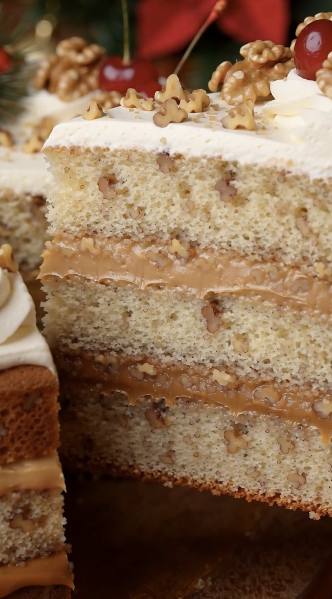
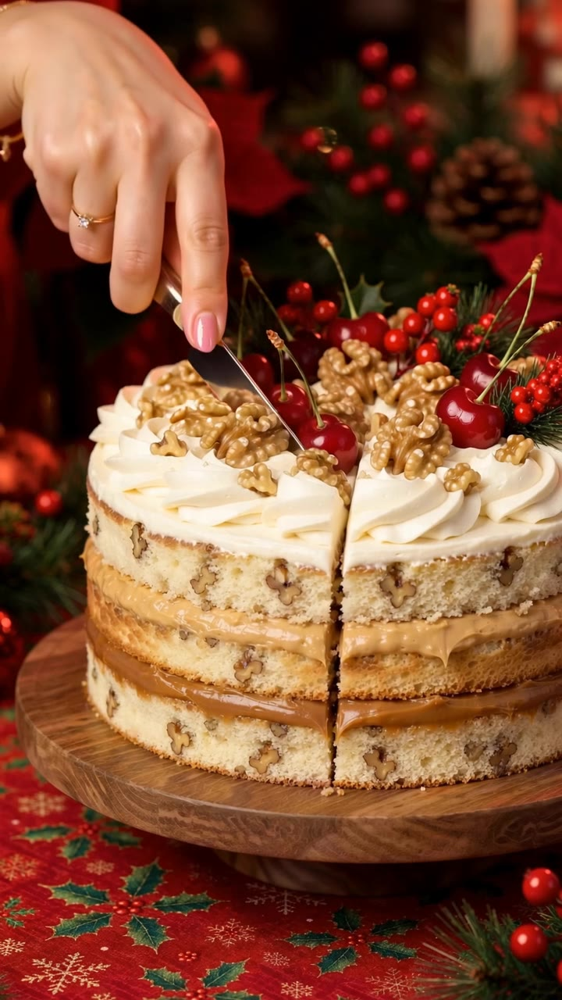
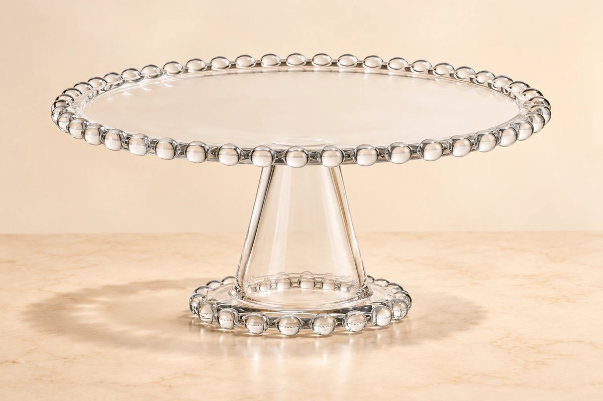

Bolo de nozes com dois doces de leite e chantilly
Bolo de nozes com massa fofinha, recheios cremosos de doce de leite claro e escuro e cobertura de chantilly, decorado com nozes e cerejas. Perfeito para a ceia de Natal.

14 fatias · forma redonda de 20 cm · toque para marcar o que já separou
Este é um bolo de festa para deixar a mesa de Natal ainda mais especial: massa fofinha cheia de nozes, duas camadas de recheio, uma de doce de leite escuro com nozes e outra de doce de leite claro, e cobertura leve de chantilly, decorada com nozes e cerejas. O creme de leite deixa os doces de leite mais cremosos e fáceis de espalhar, e as 3 horas de geladeira ajudam o bolo a firmar para as fatias saírem perfeitas.
Modo de preparo- Bata os ovos, o açúcar e a manteiga até formar um creme claro. Adicione o leite, a baunilha e a farinha. Misture as nozes e finalize com o fermento.
- Coloque em forma de 20 cm untada e asse a 180 °C por 35 a 45 minutos. Deixe esfriar.
- Misture separadamente cada doce de leite com o creme de leite. Acrescente as nozes ao recheio escuro.
- Corte o bolo em 3 discos. Recheie a primeira camada com o doce de leite escuro e a segunda com o doce de leite claro. Cubra com o último disco e leve à geladeira por 3 horas.
- Bata o chantilly gelado até ficar firme. Acrescente o leite em pó, se desejar. Cubra o bolo e decore com nozes e cerejas.


Boleira de vidro com borda de bolinhas
A boleira com pé que deixa bolos e docinhos com cara de confeitaria. Linda para festas, mesa de Natal e fotos de receitas.
Ver na AmazonLink de afiliado. Como Associada Amazon, ganho com compras qualificadas.
Publicada em 19 de novembro de 2026 · Tempo total: 1 h 15 min · Imagem ilustrativa criada com IA.
Conta pra gente como ficou! Deixe um comentário, mande uma foto do seu resultado ou marque @melhores.receitas126 no seu post.